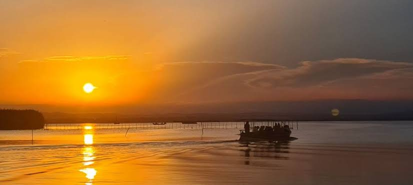
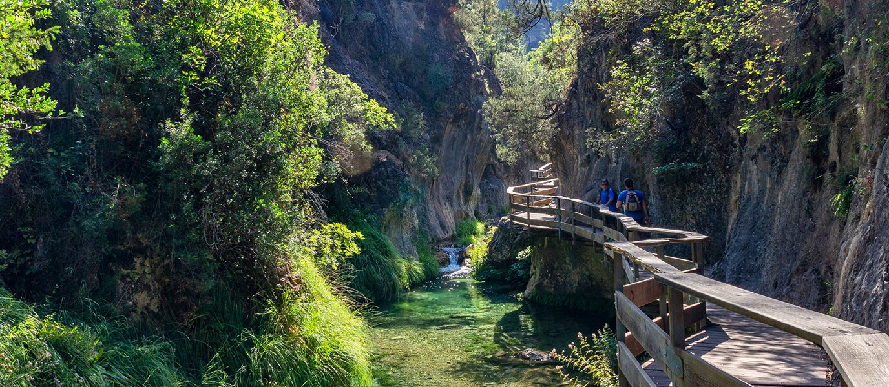

Castellón - Penyagolosa
Explora parajes naturales protegidos de Alicante, Castellón y València fomentando el transporte limpio, el respeto a la biodiversidad y el desarrollo rural sostenible.


Fomentamos el acceso seguro y gratuito a zonas verdes y protegemos el patrimonio natural y cultural de nuestros municipios.
Promovemos el senderismo responsable para evitar la erosión del suelo y proteger la flora y fauna autóctona.